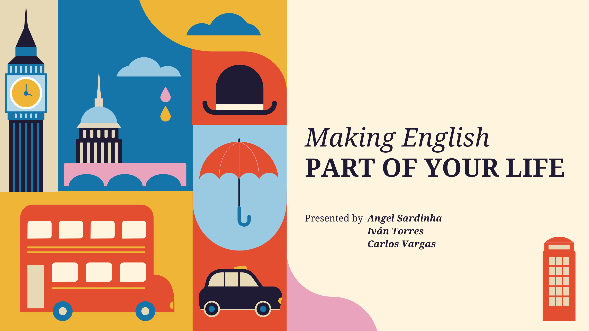
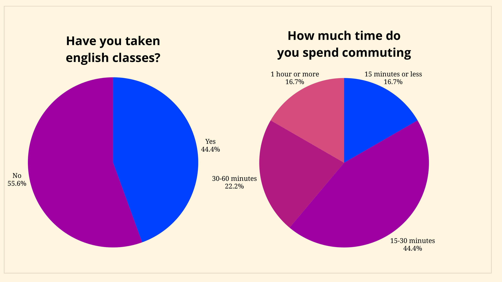
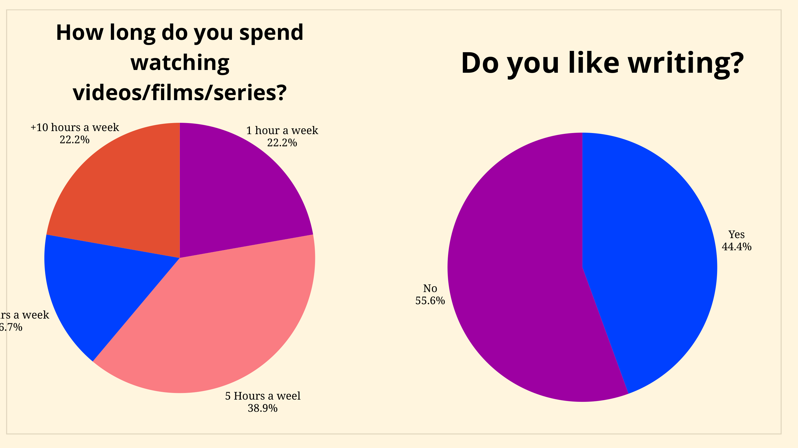

You don't need to pause your life to learn English. Discover how to weave it naturally into your everyday routines — commuting, watching, studying — and make every moment count.

To integrate English, we don't need to put our lives on hold. There are two main pathways to making it happen — and you can use both, depending on the day.
Utilizing the time already built into your daily routines — commuting, cleaning, grocery shopping. No extra hours required; just shift the language.
Setting aside exclusive, focused blocks of time during the week for grammar, vocabulary, or writing — treated with the same commitment as any other appointment.


If you decide to study 20 minutes a day, or half an hour three times a week, you must respect it as if it were a medical appointment. No excuses, no postponing.
20 minutes of grammar or vocabulary every afternoon — short, consistent, and effective.
45-minute blocks on Saturday and Sunday mornings. Studying alone, as the majority prefers, keeps you focused.
Find your window of time and protect it every week — whatever schedule works, stick to it.
Stick to your action plan.
Don't postpone it.
View the original presentation
View Canva Presentation →